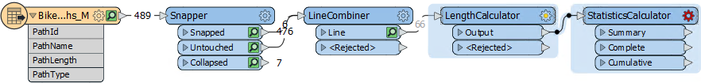
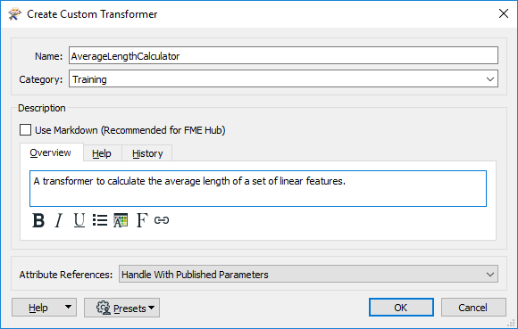
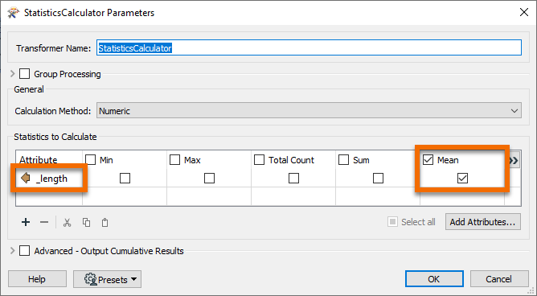
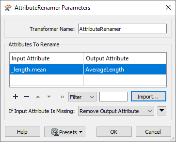
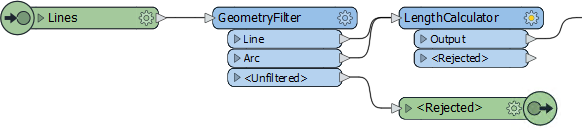

After completing this lesson, you’ll be able to:
You arrived early at the office for a meeting, but someone canceled it at the last minute. Typical! Still, it gives you time to carry out an FME project that has been on your mind: a transformer to calculate the average length of linear features.
Open the starting workspace in FME Workbench (2022.0 or later).
You’ll see that the workspace reads a set of bicycle path data and then does some minor processing to get it into a reasonable state for use in the custom transformer.
You may want to run the workspace to examine the output and see what data we are dealing with, but remember, the custom transformer we create should work on any linear data.
The contents of the transformer will be relatively straightforward, and we’ll start with just two transformers. So, add a LengthCalculator and a StatisticsCalculator transformer to the workspace.

Select the two newly placed transformers and turn them into a custom transformer called AverageLengthCalculator. Make sure you set Attribute References to Handle With Published Parameters, although at the moment, there aren’t any references to handle.

Now we have a new custom transformer, let’s tidy it up and make it functional.
Firstly, rename the input port object to Lines (thus communicating what geometry the transformer expects). Then, add an output port object (if you don’t have one already) and rename it to Output. Then connect it to the StatisticsCalculator:Complete port:
Inspect the StatisticsCalculator parameters. Set the first-row Attribute to _length. Check Mean.

Click OK.
The StatisticsCalculator will now output a variable called _length.mean. Add an AttributeRenamer and rename _length.mean to AverageLength.

Click OK.
Run the workspace and inspect the output to ensure everything is working as expected.
Now let’s experiment with different transformer modes.
Return to the AverageLengthCalculator tab and select File > Export as Custom Transformer from the menu bar. In the Export as Custom Transformer dialog, make sure you set Insert Mode to Linked by Default. Make sure the Save Location is the default for storing custom transformers (<user>\Documents\FME\Transformers on Windows):

Click OK to close the dialog.
The custom transformer is saved (as AverageLengthCalculator.fmx), and this file will open in a new instance of FME Workbench.
Go back to the instance of FME Workbench where the original workspace is open. The custom transformer is now a cyan color to denote that it is now a linked transformer (it’s linked because we chose “Linked By Default” ):

Right-click the AverageLengthCalculator and choose to Embed the transformer, and then switch back to the linked version. In a real-life scenario, the choice of mode usually depends on whether you are planning to share the transformer.
In embed mode, right-click the transformer and choose Edit. Make any change to the transformer. You’ll find that you can no longer change back to linked mode because the two definitions are now different!
Delete the embedded transformer. FME will prompt you whether you wish to delete the definition too. Click Yes.
Select Tools > FME Options on the menu bar. Click the Workbench section and locate and expand the Transformer Options. Check the option to Display Transformer Version:

Using the Quick Add menu or the Transformer Gallery, place a new instance of the AverageLengthCalculator custom transformer in the workspace (it is linked by default, which is fine). If you hover the mouse cursor over the transformer, the pop-up text will show version 1.

Return to the instance of Workbench where the FMX file is open. Move one of the objects to activate the save button. Then save the file. Notice that FME does not prompt you to save a new version. That’s because FME has not applied versioning yet. There is only one version of the transformer to edit.
So, leaving Workbench open, close the FMX file. Next, click Open and open AverageLengthCalculator.fmx. Now the transformer definition is in a new editing session, FME will prompt you to apply versioning when you save the transformer.
Let’s make an actual update to this transformer rather than just jiggling objects about to prove a point. We could filter data by geometry, so we aren’t trying to measure the length of a point feature or similar.
So, add a GeometryFilter transformer in front of the LengthCalculator. Inspect the parameters, set Mode to Complete, and select Line and Arc (both under Curve > Segment) as the Geometries Types to Filter by:

Adjust the feature mapping to connect the Line and Arc ports to the LengthCalculator. Add a second output port object by right-clicking on the canvas and selecting Insert Transformer Output. Call the newly placed port <Rejected> and connect the <Unfiltered> data to it, like so:

Now click the Save button to save the custom transformer. FME will prompt you whether you want to create a new version. Click the button labeled New Version to do so:

You can tell a new version is created by the information at the very top of the Workbench window.
Go back to the instance of FME Workbench where the original workspace is open. Click the refresh button on the Transformer Gallery for FME to scan all custom transformers and discover the new version we’ve just created:

Now right-click on the AverageLengthCalculator custom transformer, and there should be an option to Upgrade To Latest Version. Choose this option:

The transformer will be refreshed and updated, which you can tell by the presence of a <Rejected> port.